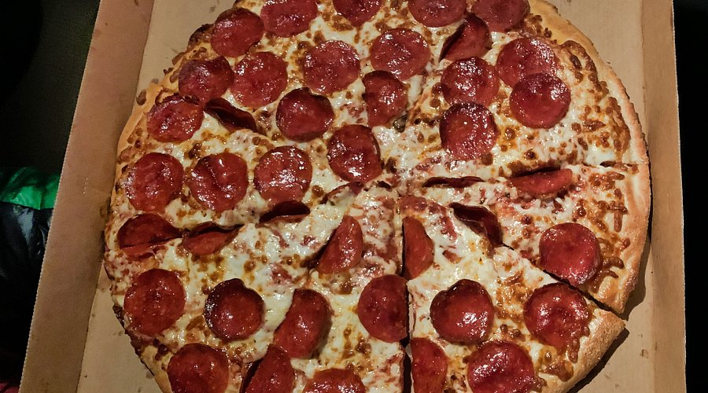

Get it while it's hot!
The smell of a delectable meal being cooked in the oven, pizza was a staple in my house, though we never went so far as to make the whole thing from scratch. Our process was simple: stop by Safeway and pick up a pre-made crust, drape it with tomato sauce, add slices of pepperoni across the top, and top with whatever cheese happened to be available—ordinarily a mix of parmesan and provolone. The process wasn't elaborate, but it was ours. After cutting it into eight slices, the pizza never made it to the stove. My brother and I carried our plates to our rooms, holding them as we watched Youtube videos.
One minute you're seven and happily holding a paper plate with 3, sometimes even 4 slices of pizza, cartoons whizzing across the screen, and the next you're thirteen and wondering what you did wrong. My "teen years" are the culprit, that period of time when you crave freedom but have no clue how to do it. Another part of me knows I was bored too early to remain with my family. I wish now that I had done that—those trivial, everyday moments could've been memories I possessed.
Pizza always meant something, though. In a way, it bound me not only to my family, but to something bigger—history, tradition, even science. Pizza is older than I thought it was; it didn't just magically appear as a fast food invention. The flatbreads that people in ancient Greece ate, topped with olive oil, herbs, and cheese, were the beginnings of what we today call pizza. And then, eventually, in Naples, Italy, the meal took on its familiar shape. The Margherita pizza—red for sauce, white for mozzarella, green for basil—was supposedly invented to honor the Italian flag. When I bite into it, I don't know that I'm tasting history spanning centuries.
There is science behind every bite, too. The Maillard reaction—the chemical process that browns food with the use of heat—happens when the cheese bubbles and becomes golden. The crust crunches not just because of heat, but because the sugars in the dough caramelize. Even the gooey pull of melted cheese serves a purpose: mozzarella contains the perfect balance of moisture and elasticity, making it ideal for pizza. I never knew that when I was a kid; I just was concerned whether the cheese hurt my tongue. But to know now that science is literally baked into the food is really making me appreciate it that much more.
Looking back at traditions, I realize that pizza nights were not so much about recipes or honoring tradition—it was about communalism, even when I didn't even know it at the time. On Friday nights, my mom would say, "Don't worry about dinner, I'll bring home pizza." My brother would hooray, and I'd secretly feel relieved that we weren't having another casserole. The smell of pepperoni browning in the oven spread through the house, pungent and salty, mixed with the warmth of melted cheese. Although we didn't eat in the dining room, we knew it was something special on pizza night.
I remember one evening, when my dad poked his head inside my room as I sat on the floor, cross-legged, holding my plate."You know," he said, half seriously, "pizza is tastier when you're eating with people, not pixels."I laughed at the time, but the line still sticks with me to this day. He wasn't talking about dinner—he was talking about connection and building a stronger relationship.
Looking back, I realize that pizza was a metaphor for how I would sometimes withdraw from my family. Not the pizza's fault—it was me choosing the comfort of loneliness over the comfort of community. And still, despite all my shortcomings, pizza makes me feel connected to my family. Even when I snatch a quick slice at Little Caesars, I find myself thinking of those nights at Safeway. It proves that good pizza doesn't necessarily need to be homemade; what matters more is with whom you're eating it—or at least with whom you can recall eating it.
For me, pizza represents an imperfect family. While this family is made up of shapes—unusual, absurd—they are unique. Just like how a pizza is almost never a perfect circle, and is in some cases even square, our family comes in many different shapes and sizes. How we look doesn’t change who we are, instead, it gives each and every one of us a sense of belonging. My aunt would always order us pizza whenever she was taking care of us, and even after her passing due to cancer, we still remember pizza as the delicious dish it is.
The older I get, the more I hope to reverse the perception I have of pizza nights. Instead of fleeing to my bedroom, I prefer to remain in the living room, maybe even scold my brother for claiming the biggest slice, or listen to my parents reminisce while the TV hums softly in the background. Pizza is not just something we eat—it's history, science, and tradition amalgamated into one dish. But for me, more than anything, it's a sign that family is worth more than the independence that I once longed for. Pizza is something that anyone and everyone can enjoy.
